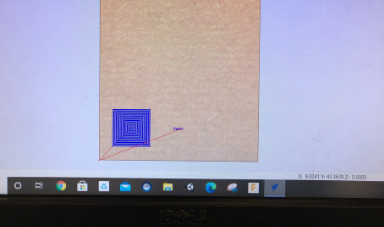

Intro to 3-Axis CNC
What is CNC?
CNC standing for computer numerical control is a system that will take take in programmed instructions to automatically run a job whether it be milling, lathe, drill... and so forth. Technically 3d printers, laser engravers, vinyl cutter, and any other tool you program using a computer is a CNC machine. In order to use a CNC machine one need to take their CAD file and import it into a CAM software which will then turn the design into machine code the machine can understand. Then you simply using the machines controller or control panel in order to zero it and run the machine code.
The machine we are using in this project is a mill and more specifically a 3-axis mill. A mill is composed of a few different important parts that are crucial to understand in order to use it effectively. Going through the basic parts there is the gantry which is a general term used for the portion of the mill that moves along the axis, there is then the spindle which is a motor that spins at around 18000 RPM. Connected to the spindle is the collet and collet nut which will hold the bit in place. The bit simply being the actual tool used to make the cut. There is a vast array of available bits (that I will talk to you about buying) more of, from endmills to drills, to surfacing tools, tapered bits and more. Next to the collet and bit and surrounding it is the dust collector connected to a vaccum to keep wood and other material dust from flying everywhere. Finally the last thing to discuss is the axis. The axis are the direction the spindle can move in (NOT THE GANTRY). Our CNC mill is 3 axis, and so can move in the x,y, and z directions allowing it to do 2 axis, 2.5 axis, and 3 axis milling operations. In the other room we have a 5-axis mill meaning that the spindle can now be angled in diagonal directions allowing for more complex cuts.
CNC standing for computer numerical control is a system that will take take in programmed instructions to automatically run a job whether it be milling, lathe, drill... and so forth. Technically 3d printers, laser engravers, vinyl cutter, and any other tool you program using a computer is a CNC machine. In order to use a CNC machine one need to take their CAD file and import it into a CAM software which will then turn the design into machine code the machine can understand. Then you simply using the machines controller or control panel in order to zero it and run the machine code.
The machine we are using in this project is a mill and more specifically a 3-axis mill. A mill is composed of a few different important parts that are crucial to understand in order to use it effectively. Going through the basic parts there is the gantry which is a general term used for the portion of the mill that moves along the axis, there is then the spindle which is a motor that spins at around 18000 RPM. Connected to the spindle is the collet and collet nut which will hold the bit in place. The bit simply being the actual tool used to make the cut. There is a vast array of available bits (that I will talk to you about buying) more of, from endmills to drills, to surfacing tools, tapered bits and more. Next to the collet and bit and surrounding it is the dust collector connected to a vaccum to keep wood and other material dust from flying everywhere. Finally the last thing to discuss is the axis. The axis are the direction the spindle can move in (NOT THE GANTRY). Our CNC mill is 3 axis, and so can move in the x,y, and z directions allowing it to do 2 axis, 2.5 axis, and 3 axis milling operations. In the other room we have a 5-axis mill meaning that the spindle can now be angled in diagonal directions allowing for more complex cuts.
3 Axis Mill
5 Axis Mill
 Anatomy of a Mill
Anatomy of a Mill
Endmill Bits
Dust Collector
CNC Mill Controller
Learning to use the 3 Axis Mill with V-Carve
I wish to preface this with Spencer was amazing, he was a wonderful teacher, and great at explaining about the mill and was clearly talented in the field, however not even the smartest person can convince me that V-Carve is not an awful software. From the terrible UI and excuse for a CAD software that makes me consider Blender as a better option, to the lack of options and no simulation or collision detection CAM section. Using the glorified MS pain "CAD" tool I made myself a few shaped to get familliar with the software. Then talked through a plan where I would make two squares one to shell and the other to cut, and I would then add two different things on each of the squares to be engraved. So the idea would be to engrave the square to be cut out, cut the square, shell the other square, then take the cut square and put it into the shell in the opposite direction. Then I would re-zero the tool and cut the engrave that was on top of the shell which would get a two faced operation on the piece of wood that was cut out.
Getting started in doing this I made the two squares then added a star and my name on one square and a pentagon on top of the other. I then switched to the CAM section and selected the engrave operation, decided to use a V-bit and inputted the provided parameters by Spencer. Then I selected the pentagon, selected the shell operation, and used a 1/4 inch endmill downcut as the tool of choice. Then I selected the square to be cut out, selected the contour operation (this is the name in Fusion I forgot what it was in V-Carve), selected a 1/4 inch endmill as the tool of choice, and added 4 tabs around the piece so it would not move. Finally I selected the last square, selected the shell operation using a 1/4 inch downcut endmill again, and added t-bones to the corned to allow the other square to slot it easier. I then numbered each of the operations in the order initally described, and put them on a USB key.
I wish to preface this with Spencer was amazing, he was a wonderful teacher, and great at explaining about the mill and was clearly talented in the field, however not even the smartest person can convince me that V-Carve is not an awful software. From the terrible UI and excuse for a CAD software that makes me consider Blender as a better option, to the lack of options and no simulation or collision detection CAM section. Using the glorified MS pain "CAD" tool I made myself a few shaped to get familliar with the software. Then talked through a plan where I would make two squares one to shell and the other to cut, and I would then add two different things on each of the squares to be engraved. So the idea would be to engrave the square to be cut out, cut the square, shell the other square, then take the cut square and put it into the shell in the opposite direction. Then I would re-zero the tool and cut the engrave that was on top of the shell which would get a two faced operation on the piece of wood that was cut out.
Getting started in doing this I made the two squares then added a star and my name on one square and a pentagon on top of the other. I then switched to the CAM section and selected the engrave operation, decided to use a V-bit and inputted the provided parameters by Spencer. Then I selected the pentagon, selected the shell operation, and used a 1/4 inch endmill downcut as the tool of choice. Then I selected the square to be cut out, selected the contour operation (this is the name in Fusion I forgot what it was in V-Carve), selected a 1/4 inch endmill as the tool of choice, and added 4 tabs around the piece so it would not move. Finally I selected the last square, selected the shell operation using a 1/4 inch downcut endmill again, and added t-bones to the corned to allow the other square to slot it easier. I then numbered each of the operations in the order initally described, and put them on a USB key.
Using Paint I mean V-Carve to make Shapes
Editting Milling Operation for Contour Cut with Tabs

"Simulating" Operation
First thing to do was then turn on the machine and move the gantry out of the way. Then we got a piece of stock, used
carpet tape on the bottom, and secured it will a drill and screws to the table. Then used the controller to set the X and
Y Zero point. Next we removed the dust collector, and used a pair of wrenches to remove the collet nut and take out the collet.
We then put into the cullet a V-Bit and resecured the collet with the collet nut. Then using a calibration tool we set the Z to
zero at our stock. Then I reattached the dust collector and ran the first engrave operation. I then changed the tool to a 1/4 inch
end mill and ran the cut and shell operation. Using a cutting tool I removed the tabs and put the cut out square in the shell.
I then reused the zero tool to zero the z to the stock that is now in the shell and ran the final shell operation to get hte final
product.
Attaching Stock to Table
Removing Collet Nut
Putting V-Bit in Collet
Zero Z Axis
Frontside of Project
Backside of Project
Design Project for CNC
For my CNC project I decided to do 3 things, and am hoping to make a collection soon of them. I designed the other project available from the first week of Fusion 360, so the biological hazard symbol which can be CNC milled, and I also implemented toolpaths for both the radioactive symbol and the chemical symbol in Fusion 360. Now designing just a single of these symbols without a guide I would consider a creative design as it requires you to come up with your own ideas on how to define the shaped and how you can relate everyhting geometrically in Fusion to get a fully defined sketch, and considering there is an infinite amount of ways to do this then an idea to come up with making these designs is inherently creative, as I am sure you would agree that not only art and design requires a creative mind, but creativity plays a crucial role in both mathematics and geometry. And due to the lack of description on how creativity is graded in your rubric I am assuming that you would be welcoming of geometric creativity and weight it equally to artistic creativity.
Starting with creating the Biohazard symbol the way I made it was by initally making the base like the other symbols, and extruding it upwards. Then I proceeded to make a sketch on top of the base. What I creatively realized was the the three large circles intersect in the middle, so started by making that, then had the creative idea of connecting three circles with an equlateral triangle. to make the circles equally spaced apart. I then added a horizontal constraint to the bottom side of the triangle, and made all the circles equal size. Then with this basis the rest turned easy. I then made the center circle, and offset outer circle. The following steps I approached creatively due to not having a plan beforehand, and made a then made anoter circle centered at the origin the would be coincident with the three outer circles where the outcircles interect making a 3 way intersection point. Then within the top circle I added two smaller circles inside that were tangential both of which connected to the origin with different length lines. I repeated this on all the other curecles with the same dimensions set up, and made a few connecting parallel lines to get the final sketch. I then extruded, and added an appearence to get the end result. A 2d thing that I CNC cut that I made creatively.
For my CNC project I decided to do 3 things, and am hoping to make a collection soon of them. I designed the other project available from the first week of Fusion 360, so the biological hazard symbol which can be CNC milled, and I also implemented toolpaths for both the radioactive symbol and the chemical symbol in Fusion 360. Now designing just a single of these symbols without a guide I would consider a creative design as it requires you to come up with your own ideas on how to define the shaped and how you can relate everyhting geometrically in Fusion to get a fully defined sketch, and considering there is an infinite amount of ways to do this then an idea to come up with making these designs is inherently creative, as I am sure you would agree that not only art and design requires a creative mind, but creativity plays a crucial role in both mathematics and geometry. And due to the lack of description on how creativity is graded in your rubric I am assuming that you would be welcoming of geometric creativity and weight it equally to artistic creativity.
Starting with creating the Biohazard symbol the way I made it was by initally making the base like the other symbols, and extruding it upwards. Then I proceeded to make a sketch on top of the base. What I creatively realized was the the three large circles intersect in the middle, so started by making that, then had the creative idea of connecting three circles with an equlateral triangle. to make the circles equally spaced apart. I then added a horizontal constraint to the bottom side of the triangle, and made all the circles equal size. Then with this basis the rest turned easy. I then made the center circle, and offset outer circle. The following steps I approached creatively due to not having a plan beforehand, and made a then made anoter circle centered at the origin the would be coincident with the three outer circles where the outcircles interect making a 3 way intersection point. Then within the top circle I added two smaller circles inside that were tangential both of which connected to the origin with different length lines. I repeated this on all the other curecles with the same dimensions set up, and made a few connecting parallel lines to get the final sketch. I then extruded, and added an appearence to get the end result. A 2d thing that I CNC cut that I made creatively.
Inital Sketch
Adding Coincident Circle
Final Sketch
 Extruding Symbol
Extruding Symbol
Extruded Symbol
Final Biohazard Symbol
CNC Project Goal
What I am hoping to be able to do is make a variety of symbols that I can mill out easily and constantly that I can then sell off as either decoration, coasters, and other needs. Plus I just really like them. I am starting with being able to mill just these three logos, but then hope to be able to make superhero logos like spiderman and Deadpool and other circular things in simmilar fasion. As so I kept being creative and learned more in toolpaths in Fusion and made a radioactive symbol and chemical symbol and milled them. Unfortunatley I forgot to take a photo of the chemical one since I did it to train Lily (extra creative I know 2 in 1) and gave it to her as she wanted to hang it in her room. (see my creative idea exists and has oppertunity). For the radioactive symbol I did a pocket to clear the middle and a contour to cut it out with a 1/4 inch endmill but that did not leave a clean cut. In the chemical symbol I changed tactics creatively and decided to try out a tapered bit with a finishing contour for the middle parts, bu the tapered bit caused it to cut jagged. Now I want to ask you to buy for us an 1/8 inch endmill to use so we can try that for more precise cuts.
What I am hoping to be able to do is make a variety of symbols that I can mill out easily and constantly that I can then sell off as either decoration, coasters, and other needs. Plus I just really like them. I am starting with being able to mill just these three logos, but then hope to be able to make superhero logos like spiderman and Deadpool and other circular things in simmilar fasion. As so I kept being creative and learned more in toolpaths in Fusion and made a radioactive symbol and chemical symbol and milled them. Unfortunatley I forgot to take a photo of the chemical one since I did it to train Lily (extra creative I know 2 in 1) and gave it to her as she wanted to hang it in her room. (see my creative idea exists and has oppertunity). For the radioactive symbol I did a pocket to clear the middle and a contour to cut it out with a 1/4 inch endmill but that did not leave a clean cut. In the chemical symbol I changed tactics creatively and decided to try out a tapered bit with a finishing contour for the middle parts, bu the tapered bit caused it to cut jagged. Now I want to ask you to buy for us an 1/8 inch endmill to use so we can try that for more precise cuts.
Pocket Cut for Radioactive Symbol
Contour Cut for Radioactive Symbol
Milled Radioactive Symbol
Pocket Cut Chemical Symbol
Finishing Cut Chemical Symbol (inner contour)
Contour Cut Chemical Symbol